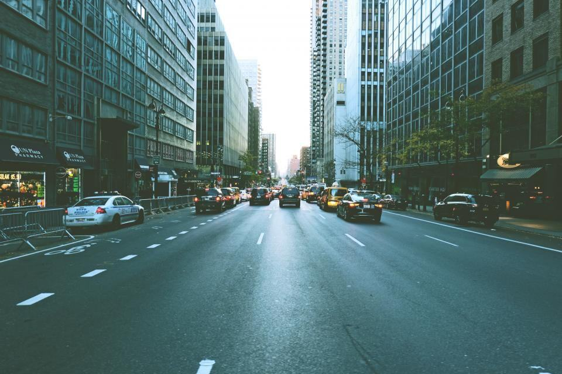
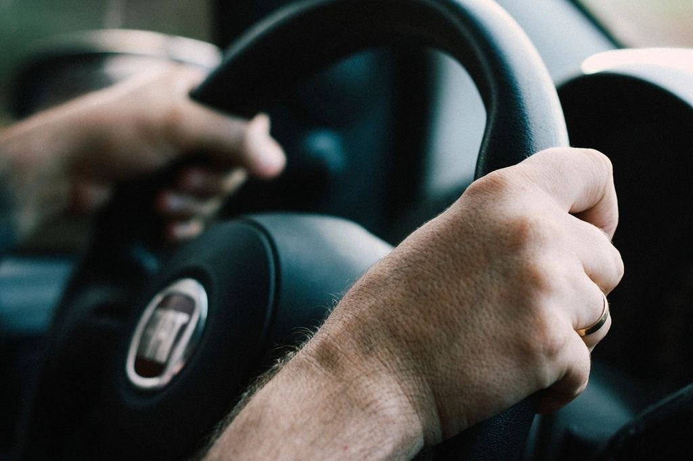
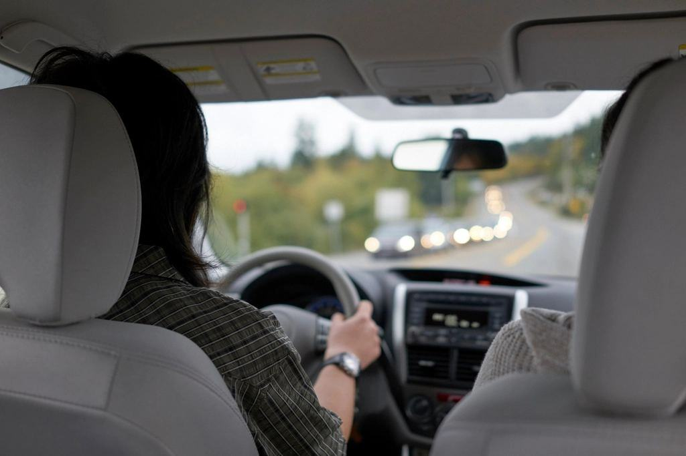
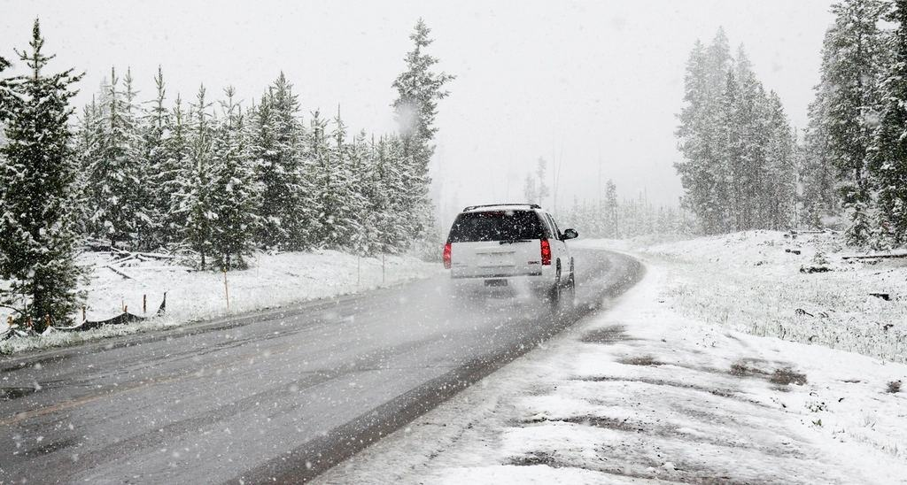

Tjänster
Vi är fyra anställda och har tre bilar, två av dem automatväxlade. Varje lärare har högst 25 elever, och alla lektioner är 60 minuter så att det finns tid för paus, frågor och att stanna bilen när det behövs.
Känner du igen dig?

Körångest
Vi börjar där du är – ibland på en tom parkering vid Nydalasjön, ibland med att bara sitta i bilen och prata. Du bestämmer när vi tar nästa steg, och vi säger alltid i förväg vad som ska hända under lektionen.
Ingen lektion i rusningstrafik förrän du själv vill.
Adhd, autism och andra NPF
Samma lärare, samma bil och samma upplägg varje gång. Du får lektionens plan skriftligt kvällen innan, och vi använder korta, tydliga instruktioner i stället för långa förklaringar under körningen.
Både Malin och Erik har gått högskolekurs i neuropsykiatriska funktionsnedsättningar.

Dyslexi och teori
Teorin är ofta det stora hindret. Vi läser frågorna högt, använder bilder och hjälper dig att ansöka om anpassat kunskapsprov hos Trafikverket, till exempel med uppläsning eller förlängd tid.
Teorin går vi igenom i korta pass om 30 minuter.

När körprovet inte gick
Ett underkänt körprov kan sätta sig i kroppen. Vi går igenom provprotokollet tillsammans, kör samma sträckor i lugn takt och övar på hur det känns att ha en förarprövare bredvid sig.
Många behöver bara fyra till sex lektioner innan nästa försök.
Du bestämmer tempot
- 1

Ett samtal först
Du ringer eller mejlar Malin. Vi pratar om vad som är svårt – du behöver inte bestämma något.
- 2

Prova-lektion
45 minuter på en tom parkering, med din blivande lärare.
- 3

En plan i små steg
Varje lektion har ett mål som du får veta i förväg. Vi går vidare när du är redo.
- 4

Trygg inför provet
Provlektioner, genomgång av provsträckor och hjälp med anpassat prov hos Trafikverket.
Behöriga och utbildade i NPF
- Godkänd trafikskolaTransportstyrelsens tillstånd att utbilda för B-körkort, sedan 2018.
- RiskutbildningGodkända att hålla riskettan, med halkbanan på godkänd bana i Umeå.
- NPF-utbildade lärareAlla fyra lärare har läst högskolekurs om neuropsykiatriska funktionsnedsättningar, 7,5 hp.
- Medlem i STRMedlem i Sveriges Trafikutbildares Riksförbund sedan starten 2018.